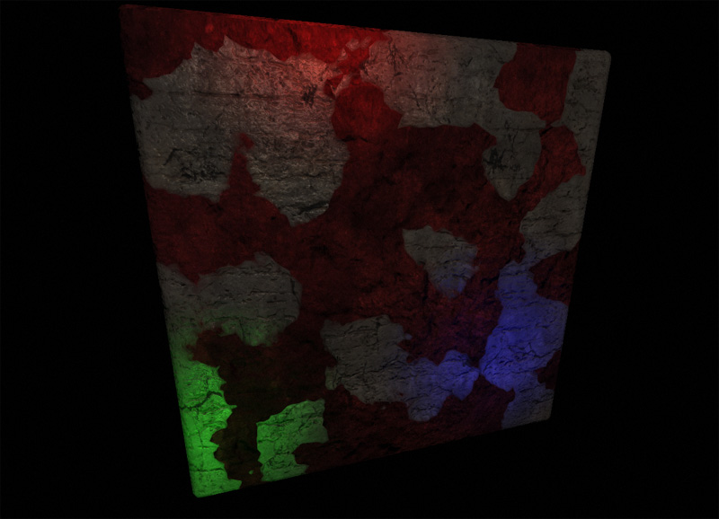
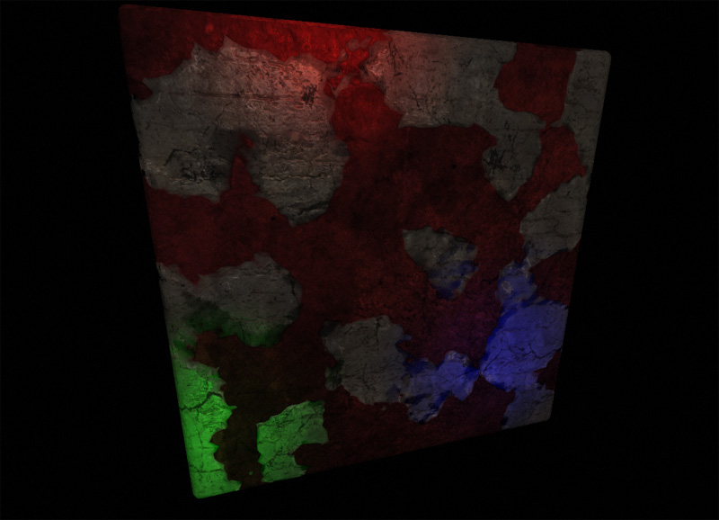

UDN
Search public documentation:
DevelopmentKitGemsDynamicNormalMapKR
English Translation
日本語訳
中国翻译
Interested in the Unreal Engine?
Visit the Unreal Technology site.
Looking for jobs and company info?
Check out the Epic games site.
Questions about support via UDN?
Contact the UDN Staff
日本語訳
中国翻译
Interested in the Unreal Engine?
Visit the Unreal Technology site.
Looking for jobs and company info?
Check out the Epic games site.
Questions about support via UDN?
Contact the UDN Staff
다이내믹 노멀 맵
문서 변경내역: James Tan 작성. 홍성진 번역.
UDK 2011년 4월 버전으로 최종 테스팅, PC 호환
개요
다이내믹 노멀맵 없음
이 스크린 샷을 보면 버텍스 블렌딩을 통해 두 개의 텍스처가 멋드러지게 블렌딩되었습니다. 그러나 실제 깊이 정보가 없으니 마치 벽면에 그린 페인트같은 느낌이 납니다.
다이내믹 노멀맵 있음
이 스크린 샷을 보면 버텍스 블렌딩을 통해 두 개의 텍스처를 멋드러지게 블렌딩되었을 뿐만 아니라 노멀 맵도 알맞게 생성되었습니다. 그래서 빨강 레이어의 깊이감이 한층 돋보입니다.
머티리얼 노드 레이아웃

관련 토픽
- Creating Normal Maps KR
- Normal Map Formats KR
- Materials Tutorial KR
- Instanced Materials KR
- Materials Compendium KR
- Material Basics KR
- Material Editor User Guide KR
- Material Instance Editor User Guide KR
내려받기
- 이 젬에 사용된 콘텐츠 DynamicNormalMap.zip 다운로드